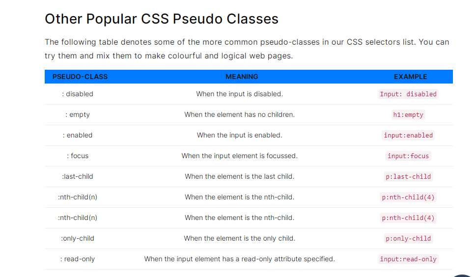

CSS Simple Selectors |
||
|---|---|---|
Selector |
Exemple |
Meaning |
CSS Tag |
h1, a, div {. . .} |
"Tags" are the predefined HTML tags. With CSS Tags selectors, you can catch them all with just a single line. |
CSS ID |
#my_id {. . .} |
CSS ID Selector determines the "id" of the element which helps in the styling. |
CSS Class |
.my_class {. . .} |
CSS Class Selector selects all the elements with a particular "class name". |
CSS Universal |
* {. . .} |
CSS Universal Selector selects everything on the web page. |
CSS Specific Class |
h1 .my_class {. . .} |
CSS Specific Class Selector select only a particular element rather than all with the same class. |
CSS Combinator Selectors |
||
Selector |
Example |
Meaning |
CSS Descendant |
div p {. . .} |
CSS Descendant Selector works on the descendants of the specified
element. With CSS Tags selectors, you can catch them all with just a single line. |
CSS Child |
div > h3 {. . .} |
CSS Child Selector is a little bit similar to the CSS descendant selector but with this selector to work, the second element should be a child of the first element. |
CSS Adjacent Sibling |
div + h3 {. . .} |
CSS Adjacent Sibling Selector selects the element, which is directly followed by the first element. All the other elements sequences are ignored, and only the directly followed element is considered. |
CSS General Sibling |
div ~ h3 {. . .} |
CSS General Sibling Selector selects all the siblings, i.e. whenever the element is followed instead of the first sibling which happens in the CSS adjacent sibling selector. |
CSS Pseudo-Class Selectors |
||
Selector |
Exemple |
Meaning |
CSS Link Pseudo Class |
a:link {...} |
The link selector applies the styling to the unvisited link of the element we attach this class to. |
CSS Visited Pseudo Class |
a:visited {...} |
CSS Visited Pseudo Class Selector works on the unvisited links. |
CSS Hover Pseudo Class |
.my_div:hover {...} |
CSS Hover Pseudo Class Selector works when the mouse is hovered over to the element to which the selector is attached. |
CSS Active Pseudo-Class |
.my_div:active {...} |
CSS Active Pseudo-Class Selector selects the element when selecting the element with the mouse (the mouse-click). |
CSS Checked Pseudo-Class |
input[type = checkbox]:checked + label{...} Example:input[type = checkbox]:checked + label{ color: red;} |
CSS Checked Pseudo-Class Selector selects the element when it is in the checked state. Since a checked state is required, it works on the checkbox and radio buttons only. |
CSS First-Child Pseudo-Class |
p:first-child{...} |
CSS First-Child Pseudo-Class Selector selects the first child among all the occurrences of the element. |
|  | ||